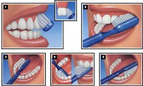

Proper Brushing Techniques You Might Be Missing
Many people brush their teeth daily but might not be doing it effectively. Learn the dentist-recommended techniques to maximize your oral hygiene routine and prevent common problems like gum disease and enamel wear.
Why Proper Brushing is Important
Brushing your teeth is essential for maintaining oral health. It helps remove plaque, prevent cavities, and reduce the risk of gum disease. Here are some reasons why proper brushing is crucial:
- Prevents Cavities: Regular brushing removes food particles and plaque that can lead to tooth decay.
- Reduces Gum Disease: Proper brushing helps keep your gums healthy and free from inflammation.
- Freshens Breath: Brushing helps eliminate bad breath caused by bacteria in the mouth.
Brushing Techniques to Follow
Here are some tips to improve your brushing technique:
- Use a soft-bristled toothbrush.
- Brush for at least two minutes, twice a day.
- Use fluoride toothpaste.
- Brush all surfaces of your teeth: outer, inner, and chewing surfaces.
- Don't forget to brush your tongue to remove bacteria.
Common Mistakes to Avoid
Many people make mistakes while brushing. Here are some common ones to avoid:
- Brushing Too Hard: This can damage your gums and enamel.
- Not Replacing Your Toothbrush: Change your toothbrush every 3-4 months.
- Skipping Flossing: Flossing is essential for cleaning between teeth.
Conclusion
For more personalized advice, schedule an appointment with us today! Remember, a healthy smile starts with proper brushing techniques.